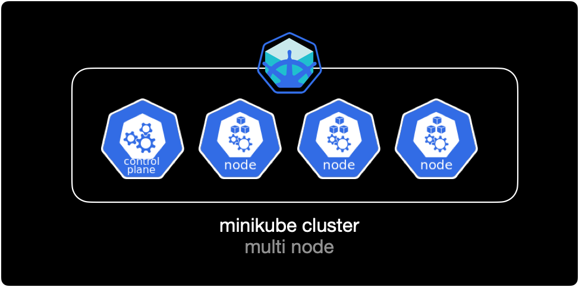

Cordon and drain
개요
cordon, uncordon, drain 명령어를 통해 쿠버네티스 클러스터를 구성하는 노드의 파드 스케줄링을 제어할 수 있습니다.
주로 노드의 패치 작업이나 하드웨어 유지보수 작업 시에 파드 스케줄링을 사용합니다.
환경
- Hardware : MacBook Pro (13", M1, 2020)
- OS : macOS Monterey 12.0.1
- Docker Desktop 4.1.1 (쿠버네티스 기능 활성화됨)
- minikube v.1.24.0 (Homebrew로 설치)
준비사항
cordon, drain 기능을 테스트하기 위한 minikube 클러스터가 필요합니다.
1대의 컨트롤 플레인과 3대의 워커 노드로 구성된 minikube 클러스터를 생성합니다.
$ minikube start \
--cni='calico' \
--driver='docker' \
--nodes=4 \
--kubernetes-version='stable'
생성한 minikube 클러스터의 구성을 그림으로 표현하면 다음과 같습니다.

cordon
kubectl cordon은 지정한 노드에 이미 배포된 Pod는 그대로 유지하면서 이후 추가적인 Pod 스케줄링에서 제외하는 명령어입니다.
cordon 설정된 시점 이후부터 해당 노드에는 추가로 pod가 배포되지 않습니다. 기존에 배포되어 있던 pod들은 영향 받지 않습니다.
cordon 설정방법
$ kubectl cordon <노드 이름>
cordon 예제
노드 확인
$ kubectl get node
NAME STATUS ROLES AGE VERSION
mnlab Ready,SchedulingDisabled control-plane,master 2d16h v1.22.3
mnlab-m02 Ready <none> 43s v1.22.3
mnlab-m03 Ready <none> 29s v1.22.3
mnlab-m04 Ready <none> 16s v1.22.3
현재 시나리오에서는 노드 4대(Master node 1 + Worker node 3)로 구성된 클러스터 환경입니다.
cordon 설정
mnlab-m04 노드에 cordon을 설정합니다.
$ kubectl cordon mnlab-m04
node/mnlab-m04 cordoned
$ kubectl get node
NAME STATUS ROLES AGE VERSION
mnlab Ready,SchedulingDisabled control-plane,master 2d17h v1.22.3
mnlab-m02 Ready <none> 12m v1.22.3
mnlab-m03 Ready <none> 11m v1.22.3
mnlab-m04 Ready,SchedulingDisabled <none> 11m v1.22.3
cordon 처리한 mnlab-m04 노드가 스케줄링 비활성화(SchedulingDisabled) 상태로 빠진 걸 확인할 수 있습니다.
deployment 생성
이제 mnlab-m04 노드에 pod가 배포 안되는지 직접 확인하기 위해 deployment를 작성합니다.
$ cat << EOF > ./deploy-nginx.yaml
apiVersion: apps/v1
kind: Deployment # 타입은 Deployment
metadata:
name: nginx-deployment
labels:
app: nginx
spec:
replicas: 5 # 5개의 Pod를 유지한다.
selector: # Deployment에 속하는 Pod의 조건
matchLabels: # label의 app 속성의 값이 nginx 인 Pod를 찾아라.
app: nginx
template:
metadata:
labels:
app: nginx # labels 필드를 사용해서 app: nginx 레이블을 붙힘
spec:
containers: # container에 대한 정의
- name: nginx # container의 이름
image: nginx:1.7.9 # Docker Hub에 업로드된 nginx:1.7.9 이미지를 사용
ports:
- containerPort: 80
EOF
5개의 nginx pod를 생성하는 deployment yaml 파일입니다.
컨테이너 이미지는 Docker Hub에 공식 등록된 nginx:1.7.9를 사용합니다.
$ kubectl apply -f deploy-nginx.yaml
deployment.apps/nginx-deployment created
작성한 yaml 파일로 deployment를 생성합니다.
배포 결과확인
deployment가 pod 5대를 생성했지만, mnlab-m04 노드에는 pod가 1대도 배포되지 않았습니다.
$ kubectl get all -o wide
NAME READY STATUS RESTARTS AGE IP NODE NOMINATED NODE READINESS GATES
pod/nginx-deployment-5d59d67564-5jz9r 1/1 Running 0 12s 10.244.1.3 mnlab-m02 <none> <none>
pod/nginx-deployment-5d59d67564-grwwc 1/1 Running 0 12s 10.244.2.3 mnlab-m03 <none> <none>
pod/nginx-deployment-5d59d67564-pmsfr 1/1 Running 0 12s 10.244.2.2 mnlab-m03 <none> <none>
pod/nginx-deployment-5d59d67564-qwnht 1/1 Running 0 12s 10.244.1.4 mnlab-m02 <none> <none>
pod/nginx-deployment-5d59d67564-xc8tv 1/1 Running 0 12s 10.244.1.2 mnlab-m02 <none> <none>
NAME TYPE CLUSTER-IP EXTERNAL-IP PORT(S) AGE SELECTOR
service/kubernetes ClusterIP 10.96.0.1 <none> 443/TCP 15h <none>
NAME READY UP-TO-DATE AVAILABLE AGE CONTAINERS IMAGES SELECTOR
deployment.apps/nginx-deployment 5/5 5 5 12s nginx nginx:1.7.9 app=nginx
NAME DESIRED CURRENT READY AGE CONTAINERS IMAGES SELECTOR
replicaset.apps/nginx-deployment-5d59d67564 5 5 5 12s nginx nginx:1.7.9 app=nginx,pod-template-hash=5d59d67564
cordon 해제
mnlab-m04 노드의 cordon을 해제합니다.
$ kubectl uncordon mnlab-m04
node/mnlab-m04 uncordoned
다시 노드 상태를 확인합니다.
$ kubectl get node
NAME STATUS ROLES AGE VERSION
mnlab Ready,SchedulingDisabled control-plane,master 2d17h v1.22.3
mnlab-m02 Ready <none> 15m v1.22.3
mnlab-m03 Ready <none> 14m v1.22.3
mnlab-m04 Ready <none> 14m v1.22.3
mnlab-m04 노드에 SchedulingDisabled 상태가 사라졌습니다.
이제 mnlab-m04 노드에 pod가 다시 배포될 수 있습니다.
drain
kubectl drain은 지정한 노드에 이미 배포된 pod를 제거한 후 다른 노드에 재배치하는 명령어입니다.
참고로 쿠버네티스에서 pod를 옮기는 기능은 존재하지 않습니다. pod를 삭제하고 다른 노드에 다시 생성할 뿐입니다. 이 과정이 pod를 옮기는 거라고 혼동하지 않는 게 중요합니다.
drain 설정된 노드에는 pod가 다른 노드로 재배치된 후 스케줄링이 비활성화SchedulingDisabled되어 이후 어떠한 pod도 배포되지 않습니다. 노드의 하드웨어 작업이나 리부팅이 필요할 경우, 먼저 drain으로 pod를 다른 노드로 재배치한 후 원하는 노드 유지보수 작업을 수행하면 됩니다.
주의사항
ReplicationController, ReplicaSet, Deployment, StatefulSet 등의 컨트롤러에서 관리하지 않는 개별 파드Static pod의 경우 drain 실행시 다른 노드에 재배포 되지않고 삭제만 발생하므로 데이터가 손실될 수 있습니다.
drain 동작방식
- 해당 노드에 더 이상 pod 배포를 하지 않도록 스케줄링 비활성화 (
SchedulingDisabled) - 노드에 이미 배포된 pod를 모두 삭제
- deployment, replicaset이 파드가 삭제된 걸 감지
- 컨트롤러가 지정된 파드 개수를 유지하기 위해 새로운 노드에 파드를 재생성
drain은 cordon 기능과 pod를 다른 노드로 재배치해주는 기능 2개가 결합된 거라고 이해하면 쉽습니다.
drain 설정방법
$ kubectl drain <노드 이름> --ignore-daemonsets
--ignore-daemonsets 옵션을 사용해서 각 노드마다 배포되는 리소스인 데몬셋을 제외하고 나머지 리소스들을 드레인합니다.
drain 예제
작업 전 노드 확인
drain을 실행하기 전에 클러스터를 구성하는 노드 리스트를 확인합니다.
$ kubectl get node
NAME STATUS ROLES AGE VERSION
mnlab Ready,SchedulingDisabled control-plane,master 2d17h v1.22.3
mnlab-m02 Ready <none> 29m v1.22.3
mnlab-m03 Ready <none> 28m v1.22.3
mnlab-m04 Ready <none> 28m v1.22.3
현재 클러스터는 4대(Master node 1 + Worker node 3)의 노드로 구성되어 있습니다.
deployment 배포
cordon 예제에서 쓴 deployment를 똑같이 배포해놓은 상황입니다.
$ kubectl get all -o wide
NAME READY STATUS RESTARTS AGE IP NODE NOMINATED NODE READINESS GATES
pod/nginx-deployment-5d59d67564-2jdjt 1/1 Running 0 6s 10.244.1.7 mnlab-m02 <none> <none>
pod/nginx-deployment-5d59d67564-4qjvt 1/1 Running 0 6s 10.244.2.7 mnlab-m03 <none> <none>
pod/nginx-deployment-5d59d67564-6qjg5 1/1 Running 0 6s 10.244.3.3 mnlab-m04 <none> <none>
pod/nginx-deployment-5d59d67564-j78cp 1/1 Running 0 6s 10.244.2.8 mnlab-m03 <none> <none>
pod/nginx-deployment-5d59d67564-j8wft 1/1 Running 0 6s 10.244.1.8 mnlab-m02 <none> <none>
NAME TYPE CLUSTER-IP EXTERNAL-IP PORT(S) AGE SELECTOR
service/kubernetes ClusterIP 10.96.0.1 <none> 443/TCP 15h <none>
NAME READY UP-TO-DATE AVAILABLE AGE CONTAINERS IMAGES SELECTOR
deployment.apps/nginx-deployment 5/5 5 5 6s nginx nginx:1.7.9 app=nginx
NAME DESIRED CURRENT READY AGE CONTAINERS IMAGES SELECTOR
replicaset.apps/nginx-deployment-5d59d67564 5 5 5 6s nginx nginx:1.7.9 app=nginx,pod-template-hash=5d59d67564
5개의 pod가 워커노드 mnlab-m02, mnlab-m03, mnlab-m04에 골고루 배포되어 있는 상태입니다.
drain 실행
이 상태에서 mnlab-m04 노드를 drain 해보겠습니다.
$ kubectl drain mnlab-m04 --ignore-daemonsets
node/mnlab-m04 cordoned
WARNING: ignoring DaemonSet-managed Pods: kube-system/kindnet-jgdz8, kube-system/kube-proxy-9fxn7
evicting pod default/nginx-deployment-5d59d67564-6qjg5
pod/nginx-deployment-5d59d67564-6qjg5 evicted
node/mnlab-m04 evicted
현재 시나리오 기준으로 Worker node마다 시스템 관련 Pod인 kindnet과 kube-proxy가 존재합니다.
drain 실행시 --ignore-daemonsets 옵션을 줘서 데몬셋에 의해 생성된 시스템 Pod는 drain에서 제외합니다.
$ kubectl get node
NAME STATUS ROLES AGE VERSION
mnlab Ready,SchedulingDisabled control-plane,master 2d17h v1.22.3
mnlab-m02 Ready <none> 31m v1.22.3
mnlab-m03 Ready <none> 31m v1.22.3
mnlab-m04 Ready,SchedulingDisabled <none> 31m v1.22.3
mnlab-m04 노드가 스케줄링 비활성화 상태인 SchedulingDisabled로 빠졌습니다.
더 이상 해당 노드에 pod가 할당되지 않는다는 의미입니다.
결과확인
mnlab-m04 노드에 있던 pod 1대가 삭제된 후 다른 노드로 재배포되었습니다.
$ kubectl get all -o wide
NAME READY STATUS RESTARTS AGE IP NODE NOMINATED NODE READINESS GATES
pod/nginx-deployment-5d59d67564-2jdjt 1/1 Running 0 91s 10.244.1.7 mnlab-m02 <none> <none>
pod/nginx-deployment-5d59d67564-4qjvt 1/1 Running 0 91s 10.244.2.7 mnlab-m03 <none> <none>
pod/nginx-deployment-5d59d67564-j78cp 1/1 Running 0 91s 10.244.2.8 mnlab-m03 <none> <none>
pod/nginx-deployment-5d59d67564-j8wft 1/1 Running 0 91s 10.244.1.8 mnlab-m02 <none> <none>
pod/nginx-deployment-5d59d67564-nn699 1/1 Running 0 20s 10.244.1.9 mnlab-m02 <none> <none>
NAME TYPE CLUSTER-IP EXTERNAL-IP PORT(S) AGE SELECTOR
service/kubernetes ClusterIP 10.96.0.1 <none> 443/TCP 15h <none>
NAME READY UP-TO-DATE AVAILABLE AGE CONTAINERS IMAGES SELECTOR
deployment.apps/nginx-deployment 5/5 5 5 91s nginx nginx:1.7.9 app=nginx
NAME DESIRED CURRENT READY AGE CONTAINERS IMAGES SELECTOR
replicaset.apps/nginx-deployment-5d59d67564 5 5 5 91s nginx nginx:1.7.9 app=nginx,pod-template-hash=5d59d67564
해제
drain 해제 방법은 cordon과 동일하게 uncordon 명령어로 스케줄링 비활성화를 해제합니다.
$ kubectl uncordon mnlab-m04
node/mnlab-m04 uncordoned
mnlab-m04 노드에 스케줄링 비활성화 상태인 SchedulingDisabled가 사라졌습니다.
이후부터는 다시 해당 노드로 pod가 배포될 수 있습니다.
$ kubectl get node
NAME STATUS ROLES AGE VERSION
mnlab Ready,SchedulingDisabled control-plane,master 2d17h v1.22.3
mnlab-m02 Ready <none> 48m v1.22.3
mnlab-m03 Ready <none> 48m v1.22.3
mnlab-m04 Ready <none> 47m v1.22.3
결론
이상으로 cordon, uncordon 그리고 drain 명령어에 대해 알아보았습니다.
실제 업무를 경험해보면 아시겠지만 클라우드 기반의 쿠버네티스 환경에서 cordon, uncordon, drain 명령어는 거의 사용하지 않습니다.
AWS를 예로 들면 노드 그룹과 클러스터 오토스케일러가 노드 레벨까지 자동으로 스케일 인, 스케일 아웃하며 관리해주는 게 가장 큰 이유입니다.
주로 하드웨어 레이어까지 관리하는 베어메탈 쿠버네티스 클러스터 환경에서 많이 쓰는 기능들이라는 점, 참고삼아 알아두세요.